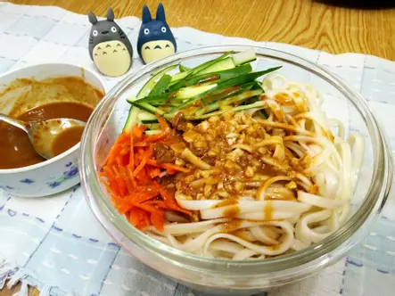

中式涼麵

夏天~就要簡單吃 , 涼爽消暑輕鬆煮
食材
- 麵條
- 香油
- 芝麻醬
- 醬油
- 細砂糖
- 熱開水
- 醋(白醋或米醋)
- 辣椒油(可不加)
- 小黃瓜
- 蒜末
- 紅蘿蔔
料理步驟
- 涼麵醬汁(自調) -黃金比例 : 將所有 涼麵醬料 拌勻備用.
- 煮麵條 : 水滾放入麵條, 約煮5-6分鐘 撈起麵條 ; 立刻拌入 "香油" (防麵條沾黏) , 用筷子把麵條上下撈一撈 (使麵條能快速散熱降溫冷卻).
- 拌入香油 已冷卻的麵條 (油油亮亮香香的...).
- 將 麵條 +配料 (小黃瓜.紅蘿蔔.蒜末) + 醬汁 拌勻.
- 成品~ 淋上醬汁...拌一拌就可以吃了...